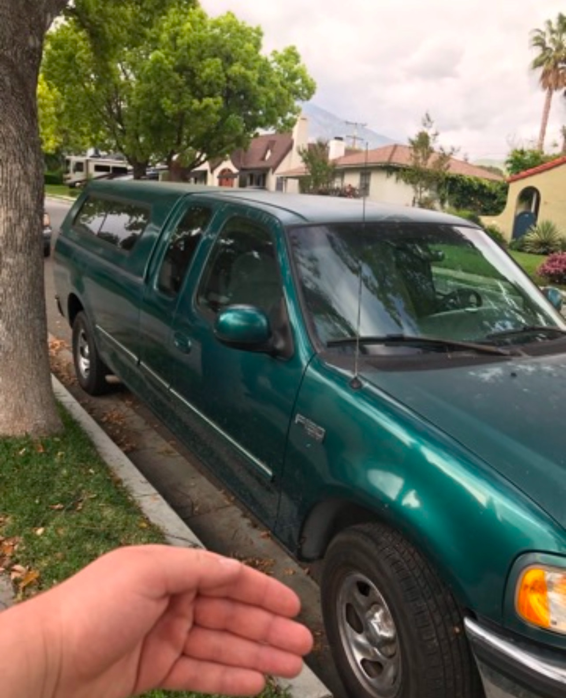

Lab 5 - Data Types and Variables
Challenge
The challenge of this lab was to incorporate variables in java script, as well as working in our browsers console.
Problems
I missed the first class where we talked abut these strategies, so most of it was pretty confusing. However with the help of wesbot and my peers I was able to work through the problems I had.
Reflection
This assignment went pretty well for me and I had a lot of enthusiasm, even if it was a bit difficult. I had to learn most of the material as I worked on the lab, but that hands on aspect only makes me feel as though I finished with a much better understanding of the material at hand.